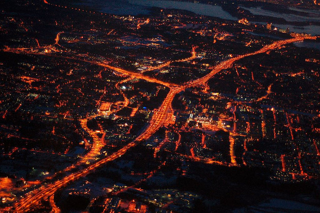
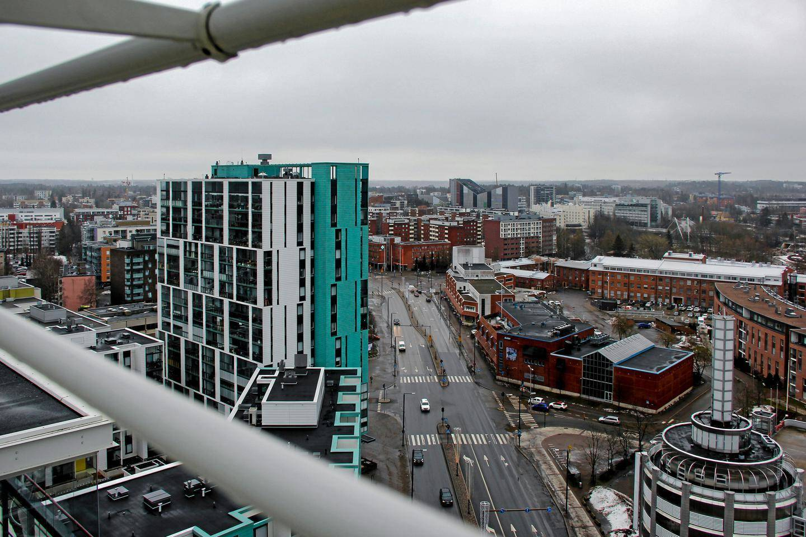
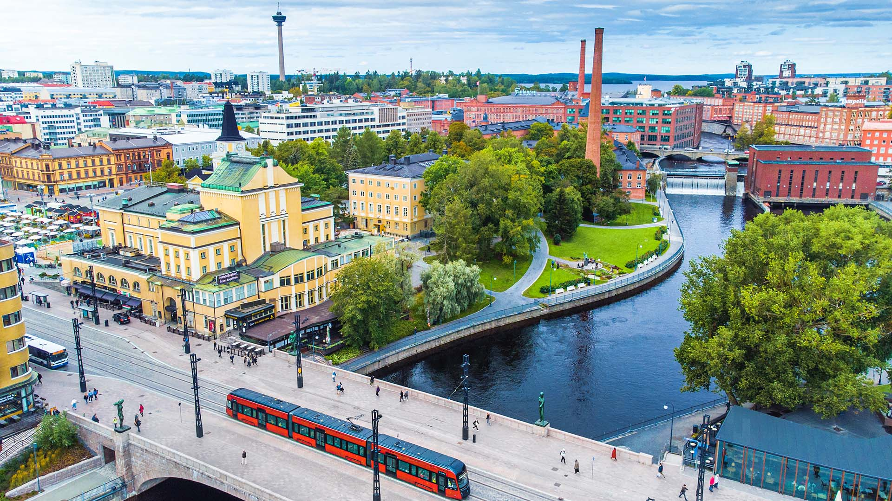
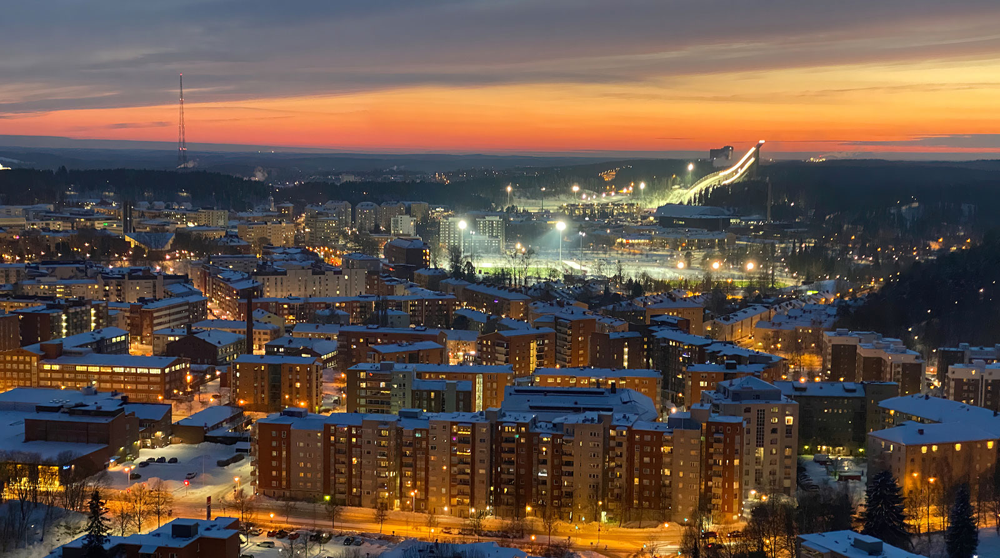

Espoo
Espoo (ruots. Esbo) sijaitsee Uudellamaalla, Helsingin metropolialueella, Suomenlahden rannalla. Naapurikuntiin kuuluvat pohjoisessa Vihti ja Nurmijärvi, idässä Vantaa ja Helsinki, länsipuolella Kirkkonummi sekä Espoon sisällä Kauniainen. Vuoden 2022 lopussa Espoon väkiluku oli 305 179 asukasta. Kaupungin pinta-ala on 528,03 km² (1. tammikuuta 2022), josta 312,34 km² on maata, 17,91 km² sisävesiä ja loput 197,78 km² merta. Espoo on osa pääkaupunkiseutua, joka muodostuu neljästä kaupungista, ja näillä kaupungeilla on laissa säädettyjä yhteistoimintavelvoitteita, kuten jätehuolto ja joukkoliikenne. HSY vastaa alueen jäte- ja vesihuollosta, kun taas HSL vastaa joukkoliikenteestä. Lisäksi Espoo kuuluu laajempaan Helsingin seudun metropolialueeseen, johon kuuluu 13 muuta Uudenmaan kuntaa. Espoon kaupunkirakenne on vahvasti yhteydessä Helsinkiin ja muihin ympäröiviin kuntiin, ja lähes koko sen väestö asuu Helsingin keskustaajaman alueella.
 Lue LisääVantaa
Vantaan edeltäjän Helsingin pitäjän (ruots. Helsinge) historia ulottuu ainakin 1300-luvulle. Pitkään luultiin myös, että varhaisin säilynyt asiakirjamaininta Helsingin pitäjästä on vuodelta 1351, jota pidettiin pitäjän synnyinvuotena aina vuoteen 2018 saakka. Ensimmäinen kirjallinen maininta Vantaasta on kuitenkin nykytietämyksen valossa kuningas Maunu Eerikinpojan Västeråsissa 14. syyskuuta vuonna 1331 antama asiakirja, joka koskee piispankymmenysten suorittamista, jolla vaadittiin jokaiselta 7 vuotta täyttäneeltä asukkaalta naula voita piispalle annettavaksi.[11] Helsingin pitäjästä tuli Helsingin maalaiskunta vuonna 1865 annetun Suomen ensimmäisen kunnallislain johdosta. Vuonna 1972 Helsingin maalaiskunta muutettiin Vantaan kauppalaksi ja tämä vuonna 1974 nykyiseksi Vantaan kaupungiksi. Vantaa on maalaiskunnan ajoista lähtien kehittynyt nykyiselleen maaltamuuton ja hyvien liikenneyhteyksien ansiosta. Vantaalle ovat Espoon tapaan ominaisia esikaupunkimaiset lähiöt ja yhden selkeän keskustan puuttuminen. Keski-Vantaalla sijaitsee Helsinki-Vantaan lentoasema, Suomen tärkein lentoasema.
 Lue LisääTampere
Tampere on Suomen kolmanneksi suurin kaupunki ja Pirkanmaan maakuntakeskus. Se sijaitsee Näsijärven ja Pyhäjärven välissä. Tampere on tunnettu teollisuudestaan, erityisesti tekstiili- ja paperiteollisuudesta historiallisesti. Kaupunki on myös merkittävä kulttuurikeskus, jossa järjestetään lukuisia tapahtumia ja festivaaleja. Nähtävyyksiin kuuluvat esimerkiksi Näsinneula-torni, Moomin Museum, ja Särkänniemi-huvipuisto. Tampereella on vahva opiskelijayhteisö, ja se tarjoaa monipuolisia mahdollisuuksia niin kulttuurin kuin luonnonkauneudenkin suhteen.
 Lue LisääLahti
Lahti on kaupunki Etelä-Suomessa, Päijät-Hämeen maakuntakeskus. Se sijaitsee Vesijärven pohjoispäässä. Lahti on tunnettu erityisesti urheilukaupunkina ja hiihtokeskuksena. Salpausselkä on perinteinen paikka maailmancupin hiihtokilpailuille. Lisäksi Lahti on merkittävä teollisuuskaupunki, ja se on kasvanut historiallisesti vahvan teollisen pohjan ympärille. Kaupungissa on myös kulttuuritapahtumia, kuten Lahti International Documentary Film Festival (Lahden dokumenttielokuvafestivaali).
 Lue LisääKatso esittelyvideo Lahdesta:
Ota Yhteyttä
CSS Tekniikoita, joita käytetty:
- CSS Gradient
- CSS Grid Layout
- CSS Parallax Background